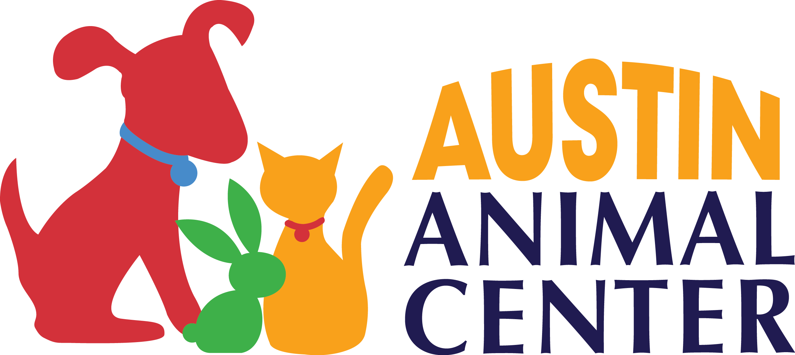

<nav class="navbar navbar-expand-lg navbar-light bg-light">

   
    <a routerLink="animals"></a>


    <button class="navbar-toggler" type="button" data-toggle="collapse" data-target="#navbarSupportedContent" aria-controls="navbarSupportedContent" aria-expanded="false" aria-label="Toggle navigation">
      <span class="navbar-toggler-icon"></span>
    </button>
  
    <div class="collapse navbar-collapse" id="navbarSupportedContent">
      <ul class="navbar-nav mr-auto">
        <li class="nav-item">
            <a routerLink="animals" class="nav-link" routerLinkActive="active" >Animals </a>
        </li>
        <li class="nav-item">
            <a routerLink="contact" class="nav-link"  routerLinkActive="active" >Contact</a>
        </li>
        <li class="nav-item">
            <a routerLink="lost" class="nav-link"  routerLinkActive="active" >Lost Pet? </a>
        </li>
      </ul>
    </div>

  </nav>

  